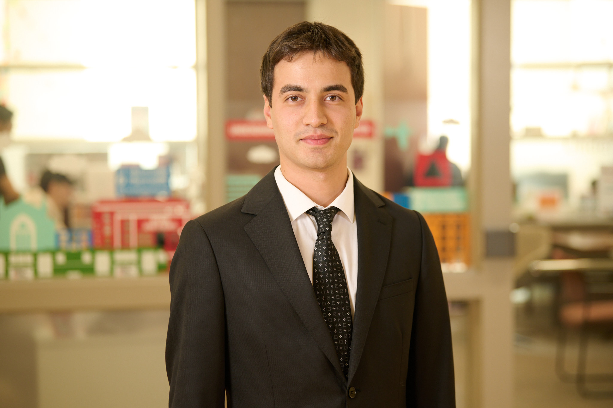

About Me
Hello! My name is Tan Aydemir and I am a senior at Boston University majoring in Computer Science with a minor in Business Administration. I'm passionate about Software Engineering, Machine Learning and Automation.

Education
Boston University
Bachelor of Arts in Computer Science| 2021 - Present
Presidential Scholar - Merit-based Scholarship
Minor in Business Administration and Management
Skills
- Programming Languages: Python, Java, SQL, Assembly, C++
- Tools & Frameworks: Docker, GitHub, Django, scikit-learn, Azure DevOps
- Other Skills: Software Engineering, Automation, Machine Learning, Data Structures and Algorithms
Hobbies
- Playing tennis
- Swimming
- Scuba-diving
- Hiking
- Playing the guitar
- Photography